COMPARISON MATRIX · 19 PAPERS
所有论文综合对照表
将每篇论文的基本信息、方法、实验、评测、表示分析、真机泛化和局限放到同一张可检索表格中。横向滚动查看完整字段，点击标题进入逐篇解读。
19论文8核心字段2种筛选
路线
年份
显示 19 / 19 篇
| 论文 / 链接 | 时间 / 作者 / 机构 | 一句话摘要 | 方法与训练信号 | 实验与评测结果 | 可视化 / 表示分析 | 真机 / 泛化 | 局限与待核对 |
|---|---|---|---|---|---|---|---|
| 2411.04983DINO-WM: World Models on Pre-trained Visual Features enable Zero-shot Planning | 2024-11-07（arXiv v2） Gaoyue Zhou, Hengkai Pan, Yann LeCun, Lerrel Pinto Courant Institute, New York University；Meta AI |
冻结 DINOv2 patch features，离线预测 action-conditioned future features，并在测试时通过 CEM 优化动作序列实现 goal-conditioned zero-shot planning。 |  输入历史图像特征和 action sequence，预测未来 DINOv2 patch features。 CEM 在 latent goal distance 上搜索动作；MPC 执行并滚动重规划。 论文比较 DINOv2、其他 pretrained encoders、causal mask、decoder loss 和数据规模。 输入历史图像特征和 action sequence，预测未来 DINOv2 patch features。 CEM 在 latent goal distance 上搜索动作；MPC 执行并滚动重规划。 论文比较 DINOv2、其他 pretrained encoders、causal mask、decoder loss 和数据规模。 |
六类环境，覆盖 PointMaze、PushT manipulation、Granular 等任务族。 | 有 PointMaze、PushT、Granular 的 planned trajectory visualization、start/goal/final 状态对比，以及 latent prediction quality 与 planning success 对照。 | 主要是仿真和离线数据实验；未将结果作为大规模真机 WAM 泛化验证。其核心贡献是证明 pretrained semantic feature 可以直接作为 planning interface。 | 没有统一的 action-generating WAM head，也没有与现代 VLA/WAM benchmark 直接对齐；更适合作为 latent planning baseline。 |
| 2506.09985V-JEPA 2: Self-Supervised Video Models Enable Understanding, Prediction and Planning | 2025-06-11（arXiv v1） Mido Assran et al.（完整作者见论文首页） FAIR at Meta；Mila – Quebec AI Institute；Polytechnique Montréal 等 |
用超过 1 million hours 的互联网视频预训练 action-free V-JEPA 2，再用少量未标注机器人视频训练 latent action-conditioned world model，实现真机 goal-image planning。 | 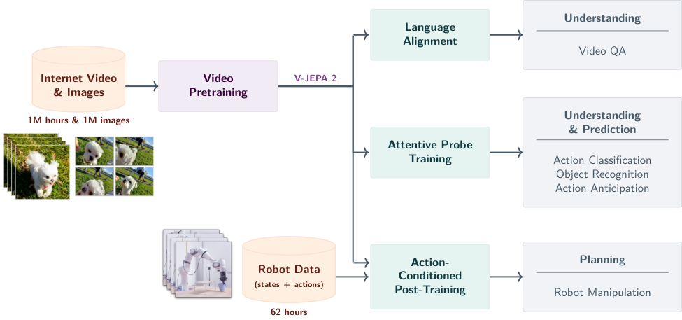 action-free V-JEPA 2：互联网视频/图像自监督预训练。 V-JEPA 2-AC：在 latent space 中进行 action-conditioned future prediction。 通过 image-goal planning 将预测 latent 用于控制。 |
Something-Something v2：motion understanding top-1 77.3。 | 有 latent decoding、closed/open gripper counterfactual prediction、camera-position sensitivity 和 action-conditioned future representation 可视化。 | 平台：两个不同实验室的 Franka arms。 | 仍需补录两个实验室的相机布置和每个目标物的逐项失败类型；真机 trial 数、任务类型与 success 表已核对。 |
| 2510.15530VO-DP: Semantic-Geometric Adaptive Diffusion Policy for Vision-Only Robotic Manipulation | 首次提交 2025-10-17；阅读版本 v4，更新于 2026-10-10。 Zehao Ni, Yonghao He, Lingfeng Qian, Jilei Mao, Fa Fu, Wei Sui, Hu Su, Junran Peng, Zhipeng Wang, Bin He。 D-Robotics；National Key Laboratory of Autonomous Intelligent Unmanned Systems；Frontiers Science Center for Intelligent Autonomous Systems；Shanghai Institute of Intelligent Science and Technology, Tongji University；Institute of Automation, C |
VO-DP 从 VGGT 内部的 DINOv2 语义特征和 geometric features 中提取多层视觉信息，用 Semantic-Geometric Fuser 与 cross-attention 融合，再通过 CNN compression 提供给 vision-only diffusion policy。 | 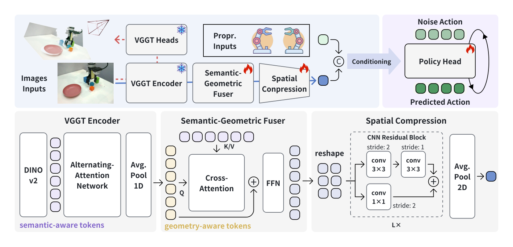 输入为单视角 RGB 图像；VGGT 对 patchified images 产生语义与几何特征，使用 cross-attention 做 per-frame semantic-geometric fusion。 融合后的视觉特征经过 CNN compression，再作为 diffusion policy 的条件；方法重点在 encoder intermediate feature extraction/fusion，而不是重新训练一个 point-cloud perception stack。 VO-DP-1 使用单帧输入，VO-DP 使用时间窗口；正文 Table I/II 和 Figure 2 对应模型结构与训练配置。 |
RoboTwin 1.0 仿真，14 个双臂 manipulation tasks（Table II）。 摘要报告 VO-DP 平均 success rate 64.6%，DP3 为 64.0%，DP 为 34.8%；正文还区分 VO-DP 与单帧 VO-DP-1，具体 task-wise 数值以 Table II 为准。 | Figure 2 是 VO-DP overall architecture，明确展示 VGGT/DINOv2 semantic branch、geometric branch、Semantic-Geometric Fuser、CNN compression 和 policy head。 Figure 3 展示 RoboTwin 仿真任务与 VGGT 重建点云；Figure 6/9 展示真实设备、物体和四类 robustness 设置。 论文重点是语义-几何特征对照与鲁棒性，而不是对单独 encoder layer 的全面 probing；“多层”应理解为 foundation model 内部特征与多分支特征融合，不能写成逐层 feature pyramid 已被完整消融验证。 | 真实世界四个 manipulation tasks；比较 vision-only DP、point-cloud DP3 与 VO-DP。 | VGGT 内部特征与 DINOv2 特征的具体层位、冻结/微调状态和 feature dimension 需要结合代码进一步核对。 论文的主要对照是 DP/DP3 与 vision-only manipulation，不能直接等同于 JEPA latent WAM 的 future prediction 结果。 当前已核对摘要、Figure 1/2、RoboTwin Table II、真实世界 Table V 和 robustness Table VI–IX。 |
| 2512.24497What Drives Success in Physical Planning with Joint-Embedding Predictive World Models? | 2025-12-30（arXiv v4） Basile Terver, Tsung-Yen Yang, Jean Ponce, Adrien Bardes, Yann LeCun Meta FAIR；Inria Paris；École normale supérieure / PSL；New York University |
系统研究 JEPA-WM 的 encoder、world-model architecture、training objective 和 planner，提出在 navigation 与 manipulation 上优于 DINO-WM 和 V-JEPA 2-AC 的组合 recipe。 | 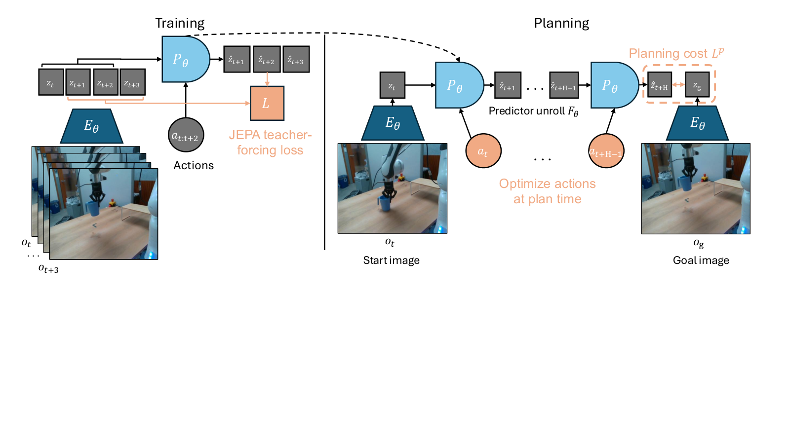 研究 DINO、V-JEPA/V-JEPA 2 等 visual encoder 的 frozen-feature world model。 比较 CEM、gradient descent 和 Nevergrad-style planning，及不同 rollout horizon/data scale。 推荐 recipe 按 navigation 与 real-world manipulation 分别选择。 |
仿真：MetaWorld、Maze、Push-T、Wall；另有 RoboCasa Reach/Place。 | 有 planned rollout 的 visual decoding、planner comparison、success-rate 与 validation metric 的 Spearman correlation，以及 image/video encoder 对比。 | 使用 DROID real-world robotic data 评估；重点是跨真实视频/仿真 holdout 的 planning transfer。需区分其“真实数据评估”与独立真实机器人闭环部署。 | 需补录最终推荐模型的逐任务 success、真机是否闭环执行、各 encoder 的 checkpoint 和每个 planner 的完整预算。 |
| 2604.06067HiPolicy: Hierarchical Multi-Frequency Action Chunking for Policy Learning | 首次提交 2026-04-07；阅读版本 v1，更新于 2026-10-10。 Jiyao Zhang, Zimu Han, Junhan Wang, Xionghao Wu, Shihong Lin, Jinzhou Li, Hongwei Fan, Ruihai Wu, Dongjiang Li, Hao Dong。 CFCS, School of Computer Science, Peking University；National Key Laboratory for Multimedia Information Processing, Peking University；Xi'an Jiaotong University；Tsinghua University；Beijing University of Aeronautics and Astronautics；Jingdong T |
HiPolicy 从不同时间频率的 observation history 提取层级特征，同时预测不同频率的 action chunks，并通过 hierarchical FiLM、global feature fusion 和 entropy-guided execution 平衡长时规划与精细闭环控制。 |  从 raw observation chunk 中按不同频率抽取历史帧，经 observation encoder 得到 hierarchical observation features；视觉输入可为 2D images 或 3D point clouds，proprioception 可选。 hierarchical FiLM 将每个频率的 observation feature 与同频 action feature 对齐；global feature fusion 跨频率做 attention 通信，再与 local features 拼接。 多频 noisy action chunks 拼接后由 1D-CNN U-Net diffusion model 预测噪声；训练目标仍是 diffusion policy 的 action denoising。 从 raw observation chunk 中按不同频率抽取历史帧，经 observation encoder 得到 hierarchical observation features；视觉输入可为 2D images 或 3D point clouds，proprioception 可选。 hierarchical FiLM 将每个频率的 observation feature 与同频 action feature 对齐；global feature fusion 跨频率做 attention 通信，再与 local features 拼接。 多频 noisy action chunks 拼接后由 1D-CNN U-Net diffusion model 预测噪声；训练目标仍是 diffusion policy 的 action denoising。 |
仿真：RoboTwin 1.0 与 RoboTwin 2.0，共 24 个 manipulation tasks。 DP/DP+HiPolicy 在 epoch 600、每任务 100 independent episodes 评测；DP3 变体遵循 DP3 protocol，在 epoch 3000、每任务 100 episodes 评测。Table 2/3 报告多频结构和 entropy-guided execution 消融；移除 hierarchical feature fusion 会造成约 6% 的性能下降。 | Figure 3 展示 HiPolicy 总体结构、hierarchical observation features、FiLM fusion、global cross-frequency fusion 和多频 action chunks。 Figure 4 展示 entropy-guided execution；Figure 5 展示 8 个真实机器人任务。 Table 2/3/4 及 Appendix E.3 分析 hierarchical feature fusion、entropy sampling 次数、observation history、chunk size 和 frequency levels。 | 明确使用 Franka Panda、Robotiq 2F-85 和三台 ZED 系列相机；8 个真实世界任务，每任务 10 次评测，随机化初始物体。 | “多层/多频”主要是不同时间频率的 observation features，不等同于 frozen foundation encoder 的 transformer intermediate layer fusion；应与 GIFT、VO-DP、LeWAM AdaFuse 分开归类。 具体 visual encoder backbone、不同频率的 history 采样和所有 task-wise success 数值需参考 Appendix 与代码进一步核对。 当前已核对 Figure 3/4/5、Table 2/3/4/5 及真实世界硬件与评测协议。 |
| 2605.06388Reconstruction or Semantics? What Makes a Latent Space Useful for Robotic World Models | 2026-05-07（arXiv v1） Nilaksh, Saurav Jha, Artem Zholus, Sarath Chandar Chandar Research Lab；Mila – Quebec AI Institute；Polytechnique Montréal；Canada CIFAR AI Chair |
在 BridgeV2 固定 transition model、action conditioning 和数据协议下比较 VAE、Cosmos、V-JEPA 2.1、Web-DINO、SigLIP 2 等 latent encoder，分析 visual fidelity、planning 和 downstream policy 的关系。 | 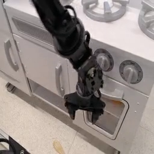 固定 DiT world-model architecture，只替换 encoder/decoder path；部分 semantic encoder 使用 S-VAE adapter。 测试 DiT-S/B/L 多个规模、single/multi-view、CEM 与 inverse-dynamics probe。 用 VLM judge 评估 trajectory success，并报告 bootstrap confidence interval。 |
BridgeV2 world-model training/evaluation；包含 ID、OOD distractor、OOD instruction 以及 policy-in-the-loop episodes。 | 有 latent-space overview、OOD distractor/instruction rollout、per-instruction success、encoder-ceiling drop、inverse-dynamics recovery 和 representation quality 分析。 | 重点是 BridgeV2 policy-in-the-loop / OOD evaluation；是否包含真正硬件闭环需按正文区分，不能将 VLM-judged episodes 直接写成真机实验。 | 需补录 BridgeV2 的真实/仿真比例、每个 OOD 设置 episodes、V-JEPA 2.1/Web-DINO checkpoint 和硬件部署信息。 |
| 2605.07079Learning Visual Feature-Based World Models via Residual Latent Action | 2026-05-08（arXiv v2） Xinyu Zhang, Zhengtong Xu, Yutian Tao, Yeping Wang, Yu She, Abdeslam Boularias Rutgers University；Purdue University；University of Wisconsin–Madison |
从 DINO feature residual 中学习 Residual Latent Action（RLA），用 flow matching 预测 RLA，并将其用于 world-action modeling、VLA 改善和 offline visual RL。 | 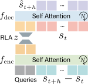 frozen/feature-based visual state 与 action 输入 flow-matching predictor。 评估 future frame prediction、planning、policy learning 和 world-model visual reward。 对比 feature-based world model 与 video-diffusion world model 的质量和速度。 |
仿真与 real-world datasets；报告 LPIPS、SSIM、DINO L1、pixel L1 和 FLOPs。 | 有 RLA residual、future feature prediction、planning rollout 和 speed/quality 对比；重点分析 latent action 的时间进展属性。 | 摘要确认包含 real-world datasets 和 real-robot policy improvement；具体平台、任务和 OOD 变量需按项目页/正文实验表区分，不将其泛化为 zero-shot。 | 需要补录 exact robot platform、LIBERO protocol、真实机器人 trials、数据是否 actionless，以及各 world-model baseline 的统一计算预算。 |
| 2608.09381JEPA-WAM: Learning Vision-Language-Action Policies with Joint-Embedding World Modeling | 2026-08-10（arXiv v1） Yihan Lin, Jiawei He, Shifeng Bao, Chen Zhao, Yang Li, Xiaobo Wang, Yan Wang, Cheng Chi, Jing Zhang School of Information, Renmin University of China；XYZ Embodied AI；Key Laboratory of Data Engineering and Knowledge Engineering；Engineering Research Center of Database and Business Intelligence；Shenzhen University of Advanced Technology；Inst |
在冻结 V-JEPA 2.1 latent space 中构造 spatially structured joint current–future target，用共享 predictor 同时学习 latent transition 和 continuous action generation。 |  frozen V-JEPA 2.1 encoder；多视角视觉 token 构造联合当前-未来 target。 target branch 仅训练时使用；部署时只保留 predictor/action pathway。 采用 continuous action generation，并比较无 robot-policy pretraining 与 pretrained VLA 两组设置。 frozen V-JEPA 2.1 encoder；多视角视觉 token 构造联合当前-未来 target。 target branch 仅训练时使用；部署时只保留 predictor/action pathway。 采用 continuous action generation，并比较无 robot-policy pretraining 与 pretrained VLA 两组设置。 |
LIBERO：无大规模 robot-policy pretraining 的 JEPA-WAM 平均 96.7%；π0.5 + JEPA objective 平均 97.8%。 | 有 joint target 的 temporal-gap decoding、patch-wise correlation、trajectory residual/endpoint displacement 分析；还报告 inference latency/frequency 和 target construction ablation。 | 真机为双臂 manipulation；5 个任务覆盖放置、堆叠、抽屉多阶段操作。 | 需补录 Table 15 的 ID/OOD 逐任务 normalized completion score，以及各 baseline 的真机逐项结果和训练预算。 |
| 2609.04193GIFT: Guided Intermediate Feature Training via Action-Oriented Structural Supervision for Robotic Manipulation | 首次提交 2026-09-03；阅读版本 v1，更新于 2026-10-10。 Yupeng Zheng, Xiang Li, Songen Gu, Yuhang Zheng, Shuai Tian, Weize Li, Linbo Wang, Chaoyue Li, Qichao Zhang, Haoran Li, Zhongpu Xia, Ya-Qin Zhang, Shuicheng Yan, Dongbin Institute of Automation, Chinese Academy of Sciences；University of Chinese Academy of Sciences；National University of Singapore；Tsinghua University；Fudan University（作者页列出的单位集合）。 |
GIFT 不规定统一的 action head，而是用 geometry alignment、affordance prediction 和 goal-region reconstruction 训练共享于动作路径的中间视觉特征，使 VLA、Fast-WAM 和 inverse-dynamics WAM 保留更有控制价值的结构信息。 | 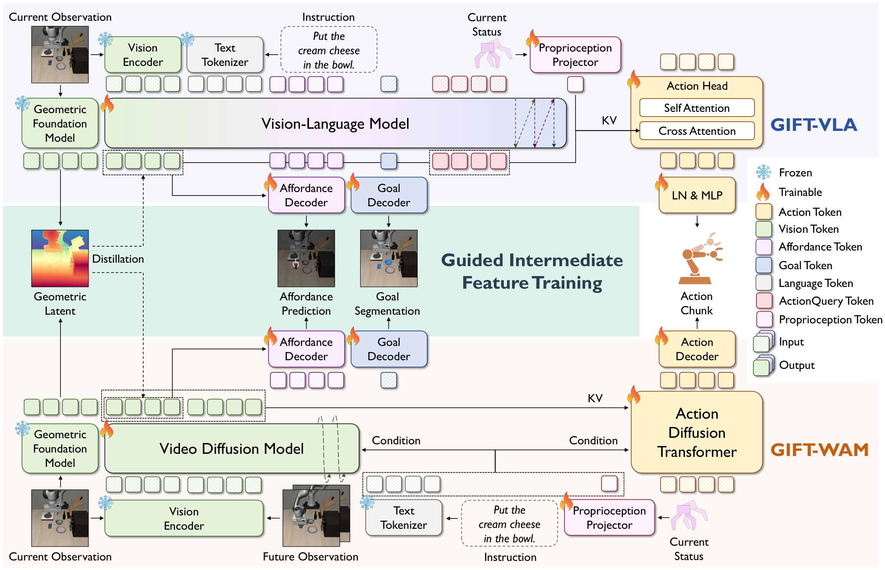 GIFT 直接监督 action pathway 使用的 intermediate visual features，而不是固定某种 decoder 或动作头；正文 Section 3 明确强调其 architecture-flexible 设计。 geometry guidance 对齐运动可行性相关的场景结构；affordance guidance 预测 instruction-relevant entities 与 object-centric end-effector 配置；goal guidance 重建由语言指令确定的目标区域。 三类约束在训练期施加，推理时比较是否将辅助预测注入 action head；目标是让中间表示本身保留控制相关信息。 |
LIBERO-Plus，标准 LIBERO 训练后 zero-shot transfer，七类 distribution shifts（摘要与 Table II）。 GIFT-VLA、GIFT-WAM-Fast、GIFT-WAM-IDM 分别达到 79.6%、72.6%、87.8%，相对匹配 baseline 提升 4.6、12.6、5.2 个百分点。 | Figure 2 展示 GIFT 在 VLA 与两种 WAM action formulation 上的整体框架。 Figure 3 对比 injection 与 no-injection 变体；正文还分析 geometry、affordance、goal 三类监督的独立与组合消融。 Figure 5 可视化 action-to-vision attention，分析中间特征对控制相关区域的关注。 | 论文摘要提到 high-precision real-world manipulation，但当前可核对的主要定量协议集中在 LIBERO、LIBERO-Plus 与 RoboCasa；独立真机平台、任务数和 trial-level success rate 在本卡片中标为待核对。 | 不同 policy configuration 的 encoder、数据规模和 action head 细节需要按 Appendix 逐项对齐，不能只比较摘要中的总成功率。 当前卡片已核对摘要、方法、Figure 2/3/5、LIBERO/LIBERO-Plus/RoboCasa 结果；真机平台与完整 success 协议待继续核对。 |
| 2609.09630JEPA Policy: Diffusion-Free Imitation Learning via Paired Action and Future Representation Prediction | 2026-09-09（arXiv v1） Jie Xu, Kangjin Yu, Ziyi Jin, Junjie Gao, Liqing Chen, Yixian Li, Shuai Tian, Zhongpu Xia Anyverse Dynamics |
将 action chunk 与其观测到的 future representation 作为配对训练目标，在共享 Transformer 中联合预测，得到无需扩散采样的低延迟 imitation policy。 | 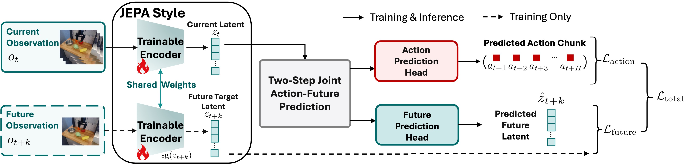 action token 与 future-representation token 在共享 Transformer 中交互。 两次 forward refinement；无单独 dynamics rollout，也不重建未来图像。 LIBERO 使用 action horizon 16；robomimic/MimicGen 使用 horizon 10，执行前 8 个 action 后重规划；20 Hz action、2.5 Hz replanning。 |
LIBERO：MokaMoka、MugMug。 | 有训练曲线、future-prediction error 分析、representation-collapse audit，以及误差对失败排序的诊断信号。 | 类型：五项 physical-robot manipulation study：Cabinet、Cup Stack、Cup Upright、Plate Grape、Pen Insert。 | 仍需补录 Table XI 的逐任务 success 数值；论文明确说明该 hardware study 没有系统的物体/光照/布局 OOD 矩阵，因此不能将其写成真机泛化验证。 |
| 2609.10506DUET-DINO: Simultaneous Cross-View World Modeling for Latent Planning in Robot Manipulation | 2026-09-09（arXiv v1） Nisarga Nilavadi, Ralf Römer, Moritz Reuss, Michael Krawez, Tobias Jülg, Angela P. Schoellig, Rudolf Lioutikov, Wolfram Burgard Artificial Intelligence and Robotics Lab, University of Technology Nuremberg；Learning Systems and Robotics Lab, Technical University of Munich；Intuitive Robots Lab, Karlsruhe Institute of Technology；NVIDIA；Robotics Institute Germany |
联合建模 side camera 与 wrist camera 的 action-conditioned latent dynamics，用 cross-view conditioning 支持完整 7-DoF manipulation planning。 |  使用 DROID 与 RoboArena 数据，从 scratch 训练 cross-view latent predictor。 latent planning 在完整 7-DoF action space 中执行；任务包含 reach、angled reach、multi-goal grasp-and-lift。 与 single-view、independent dual-view baselines 比较。 使用 DROID 与 RoboArena 数据，从 scratch 训练 cross-view latent predictor。 latent planning 在完整 7-DoF action space 中执行；任务包含 reach、angled reach、multi-goal grasp-and-lift。 与 single-view、independent dual-view baselines 比较。 |
RoboLab simulator：spatially diverse reach、orientation-intensive angled-reach、multi-goal lift。 | 有 cross-view prediction、fine-grained action rollout 和不同 encoder 对 scene-change 捕捉能力的可视化/定性对比。 | 摘要重点是 simulator 与 dataset-level visual shifts；是否包含 physical robot deployment、平台和 trials 需以正文最终实验段落核对，不能仅凭项目页推断。 | 需补录 real-robot 是否存在、DROID/RoboArena 数据规模、每个 benchmark 的 episode 数和 DINOv3 具体版本。 |
| 2609.20277JEPA-WAM: Connecting Generated Visual Instructions to World Action Models through JEPA Latent Representations | 2026-08-04（arXiv v1） Tianbin Liu, Jian Zhu, Taiyi Su, Jianjun Zhang, Chong Ma, Zitai Huang, Yi Xu 论文 HTML 正文未提供作者 affiliation 字段；单位暂记为“未公开/待 PDF 首页核对”，不据作者或项目名推断。 |
用文本生成器为每条 instruction 生成视觉完成假设，再用 frozen V-JEPA 2.1 编码成 dense goal tokens，同时条件化 video/action experts，强化 WAM 的 instruction following。 | 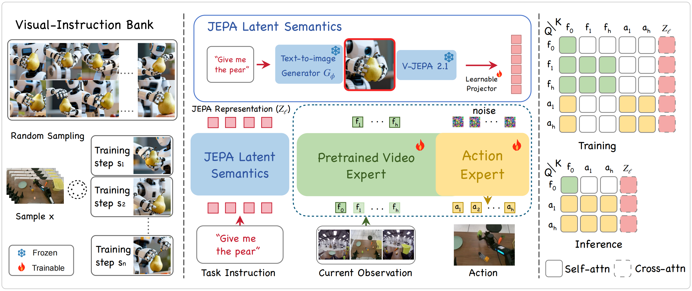 每条文本 instruction 采样多张 task-completion image；默认 visual-instruction bank 为 1,024 张。 V-JEPA 2.1 dense representations 经 learnable projector 压缩为 goal tokens。 与 real demonstration keyframe bank（KF-64）和不同规模 generated bank（J-64/J-512/J-1024）比较。 |
真机 benchmark：11 个行为相关任务，包括 Give bread/pear/egg/carrot、PnP car/bread/carrot/egg/pear、Sort toys、Wipe table。 | 有 704 张生成图像的 UMAP：不同 task-level visual hypotheses 形成结构化区域；另有真实 keyframe 与 generated bank 的 qualitative 对比。 | 真机为共享 workspace manipulation，固定 box/plate/towel basket，随机化 object layout 与 container configuration。 | 需从正文补充真实机器人本体型号、每个 task 的 rollout 数、生成器的完整型号及生成/推理时间成本；训练数据量和 GPU 推理设置已核对。 |
| 2609.27455Latent evolving World Action Model（LeWAM，I-JEPA 路线） | 首次提交 2026-09-23；本卡片阅读版本 v2，更新于 2026-09-24。 Xueji Fang, Boqiang Duan, Hua Wu, Jingdong Wang, Guo-Jun Qi。 Zhejiang University；Westlake University；Baidu Inc.（论文首页列出的单位集合）。 |
用 I-JEPA embeddings 同时作为动作生成的视觉输入和未来状态预测目标，联合学习 action velocity 与 future embeddings，无需预训练视频扩散 backbone。 | 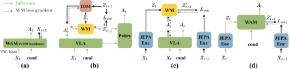 Appendix C.2：I-JEPA-H/14 encoder 约 0.6B 参数，预训练于 ImageNet-22K，冻结；224×224 输入、14×14 patch，产生 256 image tokens。 predictor + AdaFuse 共 402M 可训练参数；模型总参数约 1.0B。 AdaLN-Zero 用 noise timestep 与 task embeddings 条件化 predictor；noisy action 使用噪声时间，visual/clean-action/future-query tokens 使用零时间。 对比 encoder 时禁用 future embedding prediction，固定 12-layer、width 1280 的 action predictor 和训练 recipe；V-JEPA 2 按 single-image protocol 重复当前图像 16 次。 |
RoboTwin 2.0，50 tasks，Clean/Random 各 100 evaluation cases/task（Table 2）。 | Figure 4/6：action-to-vision attention，展示 clean/randomized 场景中对交互物体的关注。 Figure 7、Table 1：depth 与 instance segmentation probing；I-JEPA-Huge depth RMSE 0.445、correlation 0.853，AP@50 0.613、AP@75 0.323。 Figure 5：DemoDPO threshold/coefficient/group-size 消融；Figure 8/9：真机 refinement 前后和跨方法 rollout。 | Appendix D：AgileX 双臂平台，由两台 Piper manipulators 组成；固定 front camera + wrist cameras。 | 已核对 encoder、正文表格、可视化和真机评分协议。跨 encoder 的预训练数据与参数规模不完全匹配；真机 task-progress 与 success-rate benchmark 不应直接排序。来源定位：Table 1/2、Appendix C.2/C.5、Appendix D/D.1。 |
| 2609.37250V-JEPA Policy: Building Effective World-Action Models on Predictive Visual Latents | 2026-09-29（arXiv v1） Yang Zhang, Jiangyuan Zhao, Chenyou Fan, Jiayu Hu, Xiu Yuan, Chenjia Bai, Xiu Li Tsinghua University；Shanghai Jiao Tong University；Fudan University；University of Science and Technology of China；Washington University in St. Louis；TeleAI；γ-Robotics |
冻结 V-JEPA 2.1 encoder，在下游联合训练 instruction-conditioned future-latent predictor 与 flow-matching action expert，以较小的可训练参数建立 WAM。 |  输入：多视角 RGB、proprioception、language instruction。 冻结 V-JEPA 2.1 visual encoder；学习未来 latent 预测与 flow-matching action expert。 预训练阶段只使用 DROID 视频-指令；下游阶段使用机器人 demonstrations。 输入：多视角 RGB、proprioception、language instruction。 冻结 V-JEPA 2.1 visual encoder；学习未来 latent 预测与 flow-matching action expert。 预训练阶段只使用 DROID 视频-指令；下游阶段使用机器人 demonstrations。 |
LIBERO：success rate 97.25%。 | 有跨视觉基础比较、future latent 预测/表示分析和控制结果分析；引用图表时以论文 HTML 章节为准。 | 平台：TianJi Marvin dual-arm platform。 | 仍需从附录补齐 LIBERO/RoboCasa 的训练 seed 与完整 baseline 表格，以及真机失败分类；核心真机 trial 数和任务名已核对。 |
| 2609.38163Rethinking Representations for World-Action Modeling | 2026-09-29（arXiv v1） Haoyi Jiang, Liu Liu, Xinjiang Wang, Zhihao Sun, Zequn Chen, Sen Wang, Xinjie Wang, Xia Chen, Jingfeng Yao, Weiheng Zhao, Shanglin Yuan, Zhizhong Su, Wei Sui, Wenyu Liu, Huazhong University of Science and Technology；Horizon Robotics；Fudan University；Xi’an Jiaotong University；D-Robotics |
提出 ReWAM，通过 feature calibration、temporal representation bottleneck 和 action-grounded representation shaping，把预训练 DINO features 组织成适合 dynamics 与 action 的紧凑状态。 | 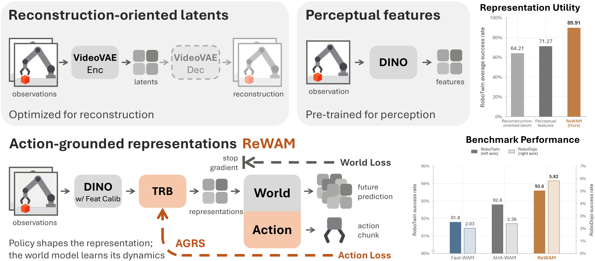 预训练 DINO feature → calibration → temporal bottleneck → world-action predictor/action policy。 action loss 与 world-model loss 采用不同 gradient routing。 在 RoboTwin 2.0 和 RoboDojo 上验证 policy performance 与 large-scale embodied pretraining。 |
RoboTwin 2.0：success 93.6%。 | 有 representation-space / bottleneck 分析、controlled encoder comparison 和 action-grounded feature shaping ablation；具体图表以 HTML 正文为准。 | 摘要明确报告 RoboDojo 结果，但平台、任务组成、真机/仿真比例和 OOD protocol 需从正文补录；RoboTwin randomized setting 不应自动等同真机泛化。 | 需补录 DINO 具体 checkpoint、RoboDojo task/score 定义、真机硬件和训练数据的 embodiment 构成。 |
| 2610.06965ACG-WAM: World-Action Modeling via Action-Conditioned Geometric Latent Prediction | 2026-10-03（arXiv v1） Jiangtao Liu, Zishang Xiang, Yage He, Lingguo Cui, Baihai Zhang, Runqi Chai, Senchun Chai School of Automation, Beijing Institute of Technology；LimX Dynamics |
用当前观测和 actions 预测多时域几何 latent，以冻结 VGGT 对当前/未来图像对编码的 future slot 为 target，推理时移除辅助 teacher。 |  当前 observation + intervening actions → geometric future features；target 来自 frozen VGGT current/future image pair 的 future slot。 当前 observation + intervening actions → geometric future features；target 来自 frozen VGGT current/future image pair 的 future slot。 |
RoboTwin 2.0，50 tasks：clean success 93.46%；randomized success 92.68%；均值 93.07%。 | 有 geometric latent、多 horizon prediction 和 auxiliary ablation 分析；详细图号/定量 probe 待从正文表格补录。 | 真机：机器人 manipulation，3 tasks。 | 需继续补齐 RoboTwin 的所有 task-wise 表格和具体随机化变量；真机硬件、任务、trial 数与 PCS 定义已核对。 |
| 2610.10515RoboJEPA: Scaling Robotic Latent World Models | 2026-10-07（arXiv v1） Artem Zholus, Nicolas Beltran-Velez, Jianhao Yuan, Sarath Chandar, Tushar Nagarajan, Daniel Severo, Koustuv Sinha, Michal Drozdzal, Adriana Romero Soriano, Jeannette Bohg FAIR at Meta；Chandar Research Lab；Mila – Quebec AI Institute；Polytechnique Montréal |
在覆盖 12 种机器人 embodiment 的大规模数据上研究 JEPA latent world model scaling，并验证 imagination error 可作为真实机器人规划能力的代理指标。 | 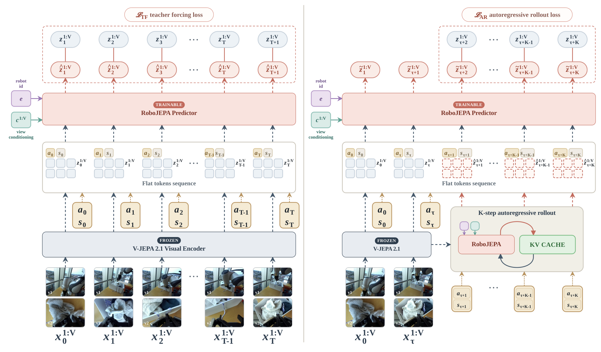 核心是 JEPA latent future prediction；改变模型规模、数据和 compute，测量 latent rollout/imagination error 与规划性能的关系。 |
多 embodiment robot data，重点是 scaling curve 而非单一 leaderboard。 | 有 scaling curves，以及 imagination error 与规划性能的相关性分析。 | 真机：zero-shot agent，single goal image conditioning，long-horizon planning。 | 需补齐 12 个 embodiment 的完整清单、仿真任务表、scaling fit 区间和不同模型的 planner success；Franka/DROID 真机任务与 10-episode protocol 已核对。 |
| 2610.12285PLaW-VLA: Predictive Latent World Modeling for Vision-Language-Action Policies | 2026-10-08（arXiv v1） Yu Liu, Hetian Guo, Tianlv Huang, Ziyi Cai, Wudi Chen, Hantang Wang, Qiutong Liu, Yingzhi Peng, Wei Han, Peijun Tang, Jianan Wang, Zipei Fan, Zhiyuan Zha, Xuan Song Jilin University；Astribot；Harbin Institute of Technology, Shenzhen；The Hong Kong Polytechnic University；The University of Tokyo |
在 prediction-oriented representation 中建模 task-relevant future states，并通过 structured causal attention 将历史、语言和未来状态用于 action generation。 |  两阶段 predictive pretraining + robot-policy training；通过 future-state masking、representation 和 pretraining ablations 检查贡献。 两阶段 predictive pretraining + robot-policy training；通过 future-state masking、representation 和 pretraining ablations 检查贡献。 |
RoboTwin Hard Horizon III：比 reactive policy +11.8 pp。 | 有 PCA visualization：current/near/far future features 随 robot arm motion 变化；有 horizon masking，far-future masking 影响略大。 | 平台：dual-arm wheeled humanoid robot。 | 真机逐任务图表主要报告 normalized task progress；仍需从 Figure 4/附录补录 π0/π0.5 的逐任务曲线数值和完整 latency 对照。 |
| 2610.12407LeWAM: A JEPA World Action Model with Diffusion-Steering-Based MPC | 2026-10-08（arXiv v1） Shashank Hegde, Alexander Popov, Elie Aljalbout, Nikolai Smolyanskiy 论文 HTML 未给出可稳定抽取的 affiliation，待从 PDF 首页核对。 |
用 decoder-free JEPA latent 端到端支持 forward、backward、inverse dynamics 和 policy prediction，并在 policy noise space 中用 diffusion-steering MPC 规划。 |  与 regular LeWM、reconstruction-based WAM 对比；flow-matching policy 使用匹配 encoder/规模。 采用 DS-CEM（diffusion-steering cross-entropy method）进行规划。 与 regular LeWM、reconstruction-based WAM 对比；flow-matching policy 使用匹配 encoder/规模。 采用 DS-CEM（diffusion-steering cross-entropy method）进行规划。 |
robosuite：Lift、Can、Square、ToolHang、Transport。 | 有 linear probe（robot/object state）、distractor 忽略对比和 latent/规划结果图。 | 重点为仿真闭环实验；作者将 real-world data/application 列为后续方向，未报告真机泛化结果。 | 作者单位已从正文确认是 NVIDIA；仍需补录六任务完整逐项 success 表和各 planner 的完整对照数值。 |
没有匹配的论文，请调整搜索词或筛选条件。
表格内容由 `papers/*.md` 自动生成；数字和协议以论文卡片中的来源定位为准。若需要完整表格、消融表或图注，请进入对应论文详情页。